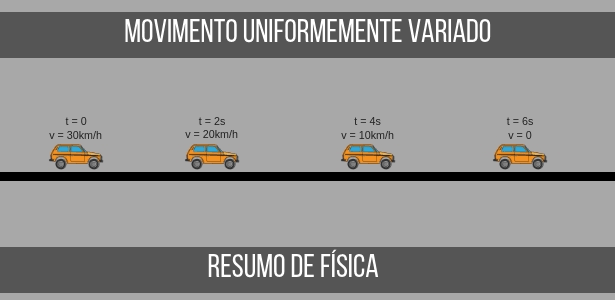
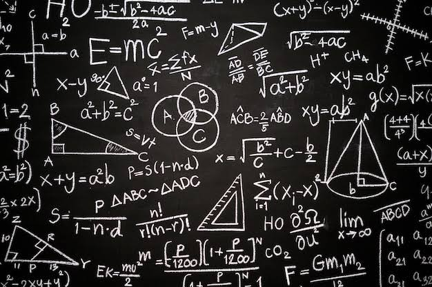
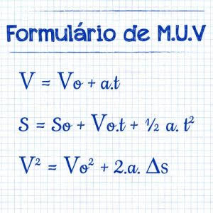

MOVIMENTO UNIFORME VARIADO

Movimento uniformemente variado é o movimento no qual a velocidade escalar varia uniformemente no decorrer do tempo.
O movimento caracteriza-se por haver uma aceleração escalar constante

PRINCIPAIS CARACTERISTICAS:
Em Física, definimos um movimento uniformemente variado como aquele que possui aceleração escalar constante e diferente de zero. Nesse tipo de movimento, a aceleração escalar média também é constante e igual à instantânea
FÓRMULA DO MOVIMENTO UNIFORME VARIADO:

Fórmulas do movimento uniformemente variado
Aceleração média: am = Δv/Δt.
Função horária da velocidade: v = v0 +a . t.
Posição em função do tempo: s = s0 + v0.t + (a.t²) /2.
Equação de Torricelli: v² = v0² + 2 . a . Δs.